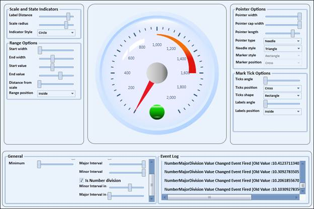

Essential Gauge for WPF includes support to customize the number of major tick lines and number of minor tick lines. It also provides support to customize the number of tick lines using MajorIntervalValue and MinorIntervalValue.
Use Case Scenarios
1. Users can specify the value using number of major divisions and number of minor divisions
2. It is an easy way to specify the number of tick lines.
Properties
|
Property |
Description |
Type |
Data Type |
|
NumberMinorDivision |
To specify the number of minor tick lines |
Double |
Double |
|
NumberMajorDivision |
To specify the number of major tick lines |
Double |
Double |
|
IsNumberDivision |
To set the number division |
Bool |
Bool |
Sample Link
Open the Sample Browser and Select the UI > WPF platform
Select the Gauge control
Select the Circular Gauge > Gauge Control Demo
And Select Linear Gauge > Linear Gauge Demo
Adding Gauge Scale NumberMajorDivision and NumberMinorDivison to an Application
|
[XAML] <syncfusion:CircularGauge.Scales> <!--Circular scale, radius value as 120--> <syncfusion:CircularScale Name="m_scale" IsNumberDivision="True" StartAngle="120" NumberMajorDivision="20" NumberMinorDivision="5">
|
|
[C#] m_scale.IsNumberDivision = true; m_scale.NumberMajorDivision = 10; m_scale.NumberMinorDivision = 50;
|

Figure 36: Circular Gauge Demo with Number Division